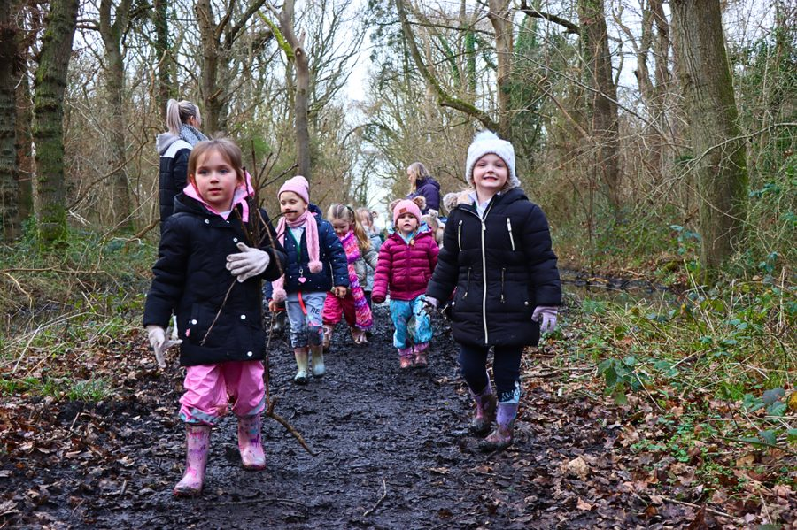

One group of families. Two ways into it.
Start with the days out. That is where you meet everybody, watch how the children get on, and find out whether these are your people. The facility is the deeper end of the same thing, and it is being prepared now.

The Days Out
Regular days out for families raising their children the same way. A morning in a park none of you have been to. A bus hired between us to the zoo. Rock pools, forests, farms, workshops — the whole group, parents included.
- Weekly, rather than the once a month most groups manage
- Children 2 to 8, with their brothers and sisters
- Your children make real friends — and so do you
- Fits around school: weekends, holidays, days off
- Easy to join, small cost, nothing long to sign

The Facility
A permanent place on the North Coast. A barn set up as an indoor park, a garden, a quiet house, and rooms for real work. Open 8am to 8pm, seven days a week, and you come and go inside that however your week needs.
- Parents stay on site — a work zone for you, twenty steps from your child
- A small number of families, chosen carefully
- A much larger commitment, and a much larger monthly cost
- For families who want this as the main part of their week
- Places go to families we already know from the days out
The application is for the days out. Everything else follows from there.